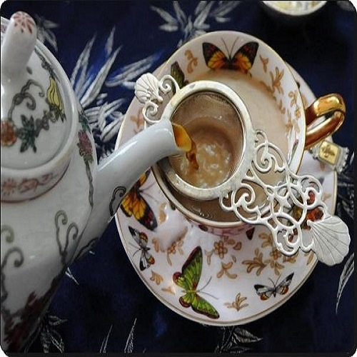

来杯奶茶吗？
来杯奶茶吗？
英式奶茶
英式奶茶重点以牛奶以及红茶为关键原料，在17世纪初，广州的官员独创了一种以添加了牛奶的茶，款待荷兰使节，因此这种特殊的喝法就在荷兰本地宣扬了开来，后来又被引入了英国，到了18世纪，奶茶已然在英国人的生活里成为了主流。
|
|

英式奶茶英式奶茶重点以牛奶以及红茶为关键原料，在17世纪初，广州的官员独创了一种以添加了牛奶的茶，款待荷兰使节，因此这种特殊的喝法就在荷兰本地宣扬了开来，后来又被引入了英国，到了18世纪，奶茶已然在英国人的生活里成为了主流。 |
|
| 版权所有©李金清第二次作业 | |